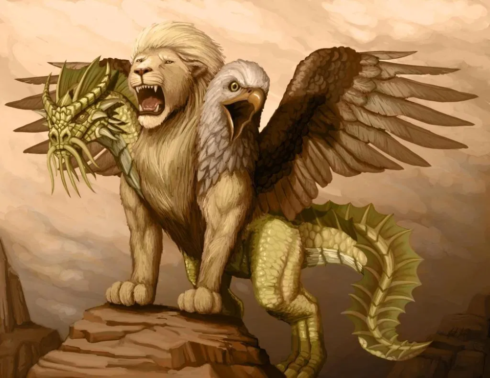
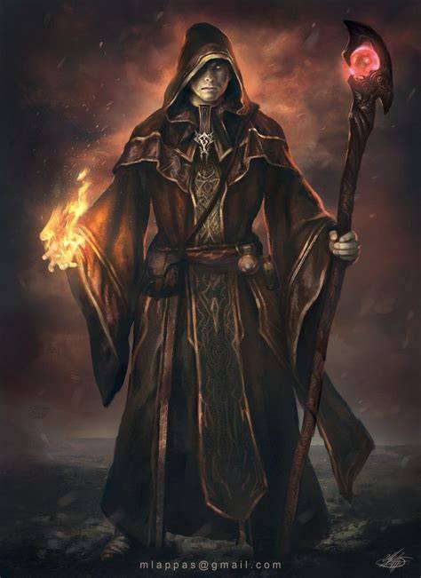
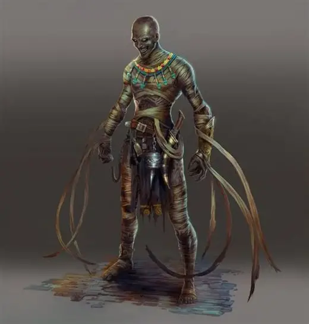
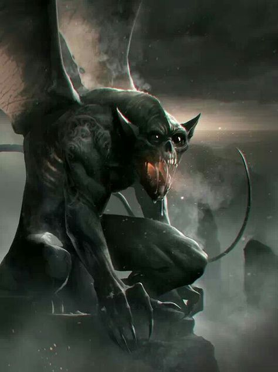
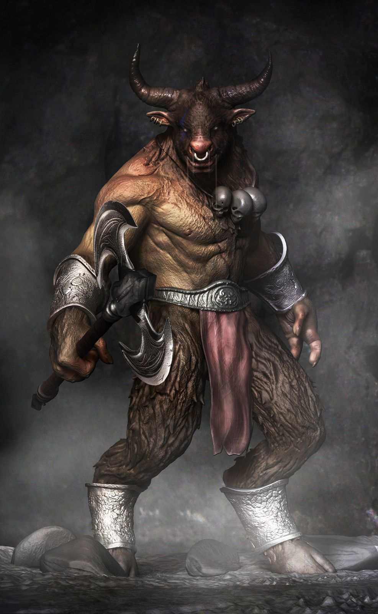
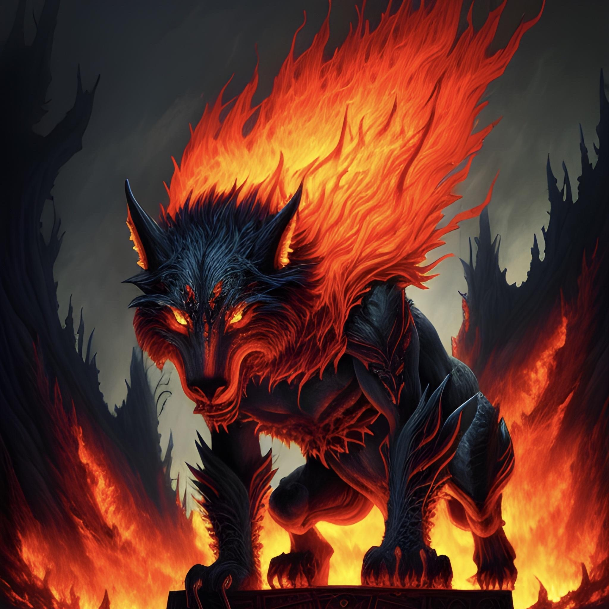

Micheat
o abençoado pelo Vs Code
.png)
Micheat (Furious)
Aquele que transcendeu as linguagens de programação

Arthur Morgan
A lenda

Khalian, Dragão do Sul Ardente
Dragão Místico do Arquipélago

Quimera, Protetora da Fronteira
Possui apenas um objetivo, eliminar e proteger a passagem de todos aqueles que não são bem vindos

Centauros
Guardas da vila de Tharok, Chefe dos Centauros do Leste Gelado

Magos
São profissionais em Magias elementares, podem ser bons ou maus

Nyarlathotep, O Caminhante sem Destino
Fantasma guia, uma alma penada que antes de morrer vagava por todo o Arquipélago

Ragnarokh, O Inferno Rastejante
Guardião da Prisão dos Condenados

Esqueletos da praia do Oeste
Apenas almas que tentam proteger sua casa, a Vila dos Coqueiros

Morbis, O Errante
Senhor das almas, comanda toda as almas que vagam no Oeste Sombrio do Arquipélago

Mumias, são os mortos vivos do Norte Escaldante do Arquipélago
Saem de suas tumbas para se alimentarem da luz que o Sol emite

Gargulas
Protetoras do Castelo Esquecido do Oeste Sombrio

Minotauros
Guerreiros brutais com corpo humanoide e cabeça de touro. Habitam labirintos e ruínas antigas cobertas de gelo do Leste Gelado do Arquipélago, atacando qualquer invasor que desafie seu território.

Skarvex, Lobos das Cinzas
Predadores supremos dos desertos vulcânicos do Sul Ardente, Skarvex emergem das fissuras flamejantes para caçar qualquer um que invadam seu território, possuem um ferrão que lança encantamentos e feitiços de Magma Arcano

Tharok, Chefe dos Centauros do Leste Gelado
É o chefe da vila dos Centauros, possui seu próprio exército que age ao seu comando, a vila se localiza no Leste Gelado